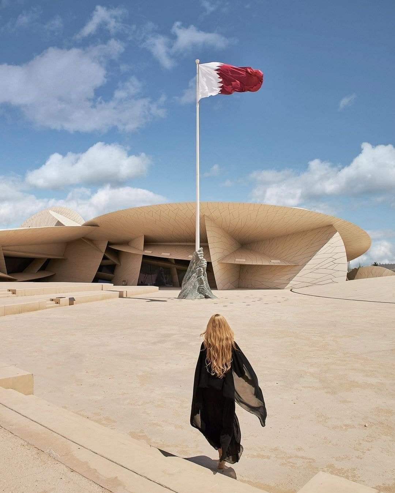
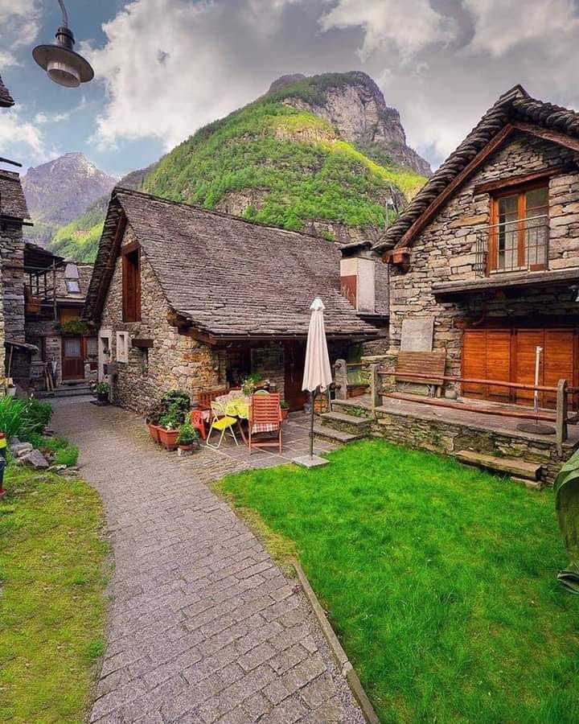
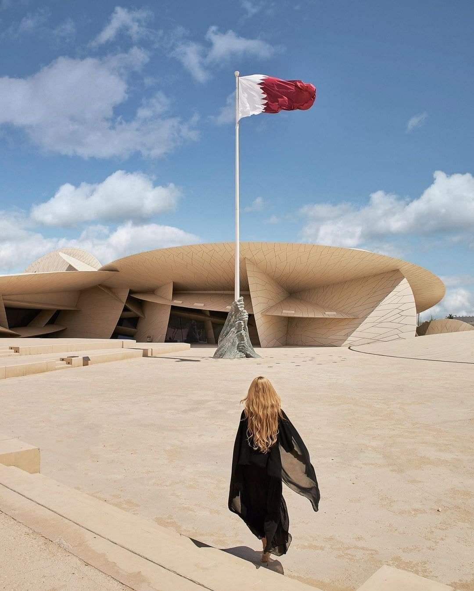
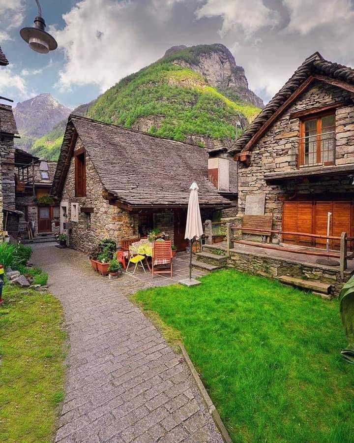

About Me
I am a naturally optimistic individual who maintains a fervently positive outlook on life. I possess an unwavering passion for my studies and derive great satisfaction from observing my instructors' satisfaction with my work. Whenever I can make a positive difference in the lives of my younger siblings, I feel a tremendous sense of pride. In addition, I am a highly skilled communicator, both in writing and orally. I am capable of adapting to any situation and adjusting my learning approach accordingly, which enables me to handle pressure exceptionally well
 


